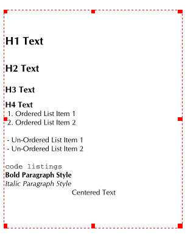

Scribus verfügt über einen HTML-Importfilter, der sauberes, wohlgeformtes HTML importieren kann und dabei viele Formatierungen übernimmt, vorausgesetzt, bei der Formatierung handelt es sich um einfaches HTML, und zwar in HTML-Auszeichnungen, nicht in CSS-Stylesheets. CSS-Unterstützung wird in einer zukünftigen Version enthalten sein.
Beim Import legt der Importfilter Absatzstile an, die den HTML-Auszeichnungen entsprechen. Fett, kursiv, nichtproportionaler Text und Textausrichtung werden ebenso berücksichtigt. Unten sehen Sie eine Liste mit HTML-Tags, die unterstützt werden, sowohl in Groß- als auch in Kleinbuchstaben
<?xml version="1.0" encoding="utf-8"?> <!DOCTYPE html PUBLIC "-//W3C//DTD XHTML 1.0 Transitional//EN" "http://www.w3.org/TR/xhtml1/DTD/xhtml1-transitional.dtd"> <html xmlns="http://www.w3.org/1999/xhtml"> <head> <title></title> <meta http-equiv="Content-Type" content="text/html; charset=utf-8" /> </head> <body> <h1>H1 Text</h1> <h2>H2 Text</h2> <h3>H3 Text</h3> <h4>H4 Text</h4> <ol> <li>Ordered List Item 1 </li> <li>Ordered List Item 2 </li> </ol> <ul> <li>Un-Ordered List Item 1 </li> <li>Un-Ordered List Item 2 </li> </ul> <code>code listings</code> <p><b>Bold Paragraph Style</b></p> <p><i>Italic Paragraph Style</i></p> <p align="center">Centered Text</p> </body> </html>
Hier sehen Sie die importierten Absatzstile:
|
Hier sehen Sie, wie der Text auf dem Bildschirm dargestellt wird:
|  |
Nicht alle Programme befolgen beim HTML-Export die W3C-Spezifikationen gleich zuverlässig. Sie können htmltidy verwenden, um aus fehlerhaften HTML-Dateien standardkonforme zu machen, um sie anschließend in Scribus zu importieren. Siehe: http://w3c.org